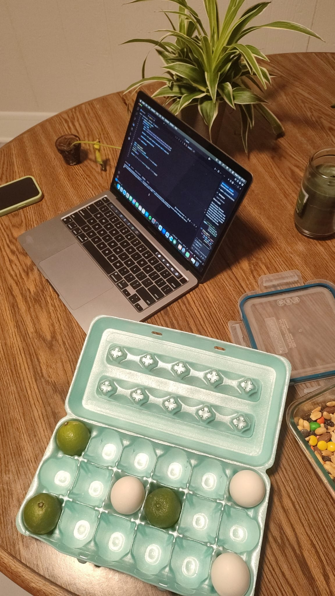

The egg box problem
One weeknight mid semester in a sunny Cleveland, I was settling into a new place with a good friend and roommate, Shiv. During this time I was baking some kind of lemon drizzle each evening, and hence required many eggs. While lifting a half empty egg box, with one hand, it felt slightly unbalanced and it had occurred to me there was a non-zero chance I could have dropped the box. In this thought, I asked Shiv if there is a different way we can store the eggs to minimize the risk of dropping the box? The conversation and resulting outcome is what follows.

The full discussion of the problem is pending to be written up by Shiv and I but here I include the AI generated code solution to the problem.
On the night of the eggbox problem we cobbled together some poorly written python code which could compute all combinations for an \(n\times m\) egg box with \(k\) eggs. After finding a satisfying solution (so we could safely store our eggs in the future) we discussed extensions and variants of the problem. Since then, I have no interest in writing any more python code. Luckily, I don't really have to since claude can do it for me. On a separate note im blown away at how easy it is for AI to write code now. Currently we have the standard variation of the problem but I intend to add the future variants and hopefully something more complicated may arise.
Try the egg box tracker
Click LOAD, then the run arrow in the lower-right corner of the editor.
The three values at the top are deliberately easy to change: choose the number
of columns and rows, list occupied positions as (column, row) pairs, and
choose how many eggs to use in the all-combinations calculation. The program
runs entirely in your browser.
"""A browser-friendly version of the Egg Box Tracker.""" from itertools import combinations from math import comb # Change these values, then run the program again. COLUMNS = 6 ROWS = 2 EGG_POSITIONS = {(1, 1), (2, 1), (5, 2), (6, 2)} ANALYSIS_EGGS = len(EGG_POSITIONS) DISPLAY_LIMIT = 10 MAX_COMBINATIONS = 1_000_000 def all_positions(cols, rows): return [(column, row) for row in range(1, rows + 1) for column in range(1, cols + 1)] def geometric_centre(cols, rows): return (cols + 1) / 2, (rows + 1) / 2 def centre_of_mass(eggs): if not eggs: return None return ( sum(column for column, row in eggs) / len(eggs), sum(row for column, row in eggs) / len(eggs), ) def display_box(cols, rows, eggs): cell_width = 3 lines = ["", "Egg Box Layout", "(E = egg, . = empty)", ""] lines.append(" " + "".join(f"{column:>{cell_width}}" for column in range(1, cols + 1))) lines.append(" " + "---" * cols) for row in range(1, rows + 1): cells = "".join( f"{'E' if (column, row) in eggs else '.':>{cell_width}}" for column in range(1, cols + 1) ) lines.append(f"R{row:<2}|{cells}") lines.append(f"\n{len(eggs)} of {cols * rows} positions filled.") return "\n".join(lines) def all_combination_centres_of_mass(cols, rows, number_of_eggs): total_slots = cols * rows if not 1 <= number_of_eggs <= total_slots: raise ValueError( f"ANALYSIS_EGGS must be between 1 and {total_slots}." ) total_combinations = comb(total_slots, number_of_eggs) if total_combinations > MAX_COMBINATIONS: raise ValueError( f"{total_combinations:,} combinations is too many to calculate " f"(limit: {MAX_COMBINATIONS:,})." ) result = [] for placement in combinations(all_positions(cols, rows), number_of_eggs): result.append((placement, centre_of_mass(placement))) return result def main(): if COLUMNS <= 0 or ROWS <= 0: raise ValueError("COLUMNS and ROWS must both be positive.") allowed_positions = set(all_positions(COLUMNS, ROWS)) if not EGG_POSITIONS <= allowed_positions: raise ValueError("Every EGG_POSITIONS entry must be inside the box.") print("=== Egg Box Tracker ===") print(display_box(COLUMNS, ROWS, EGG_POSITIONS)) current_centre = centre_of_mass(EGG_POSITIONS) if current_centre is None: print("\nNo eggs: there is no centre of mass to compute.") else: print("\nCentre of Mass") print(f"column = {current_centre[0]:.2f}, row = {current_centre[1]:.2f}") combinations_and_centres = all_combination_centres_of_mass( COLUMNS, ROWS, ANALYSIS_EGGS ) average_centre = ( sum(centre[0] for _, centre in combinations_and_centres) / len(combinations_and_centres), sum(centre[1] for _, centre in combinations_and_centres) / len(combinations_and_centres), ) target = geometric_centre(COLUMNS, ROWS) matches = [placement for placement, centre in combinations_and_centres if centre == target] print("\nAverage Centre of Mass Over All Combinations") print(f"Averaged over all {len(combinations_and_centres):,} ways to place " f"{ANALYSIS_EGGS} egg(s): column = {average_centre[0]:.2f}, " f"row = {average_centre[1]:.2f}") print("\nCombinations Whose Centre of Mass Is the Geometric Centre") print(f"{len(matches)} combination(s) have centre of mass at " f"column = {target[0]:g}, row = {target[1]:g}.") for index, placement in enumerate(matches[:DISPLAY_LIMIT], start=1): print(f"\n--- Match {index} of {len(matches)} ---") print(display_box(COLUMNS, ROWS, set(placement))) if len(matches) > DISPLAY_LIMIT: print(f"\n...and {len(matches) - DISPLAY_LIMIT} more match(es) not shown.") main()